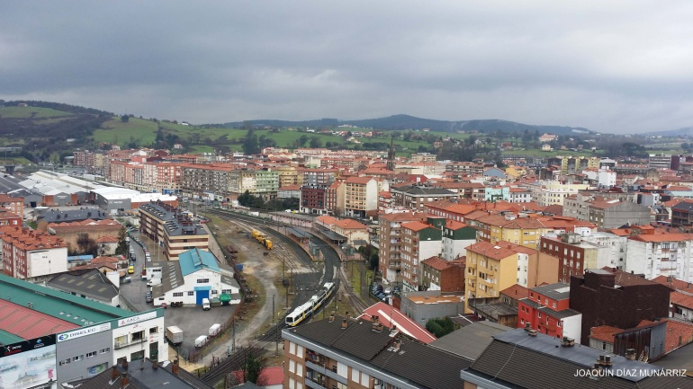

TORRELAVEGA
MERCADO DE GANADO
LA LECHERA
PARQUE MANUEL BARQUIN
TORRELAVEGA CIUDAD
TORRELAVEGA es un municipio y ciudad del norte de España.
La ciudad es de carácter industrial y comercial, siendo el segundo núcleo urbano más relevante de la comunidad autónoma de Cantabria.
